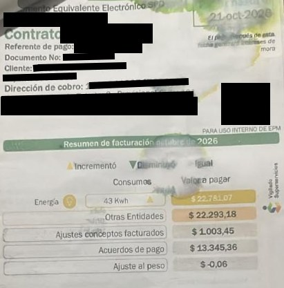
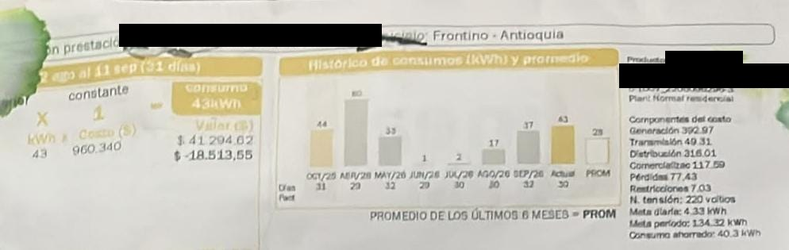

La factura
Tapé el nombre, la dirección, el número de contrato y los códigos de pago.


Historial de consumo
| Mes | Días facturados | kWh | Valor (COP) |
|---|---|---|---|
| Octubre 2025 | 31 | 44 | 42.254,96 * |
| Abril 2026 | 29 | 80 | 76.827,20 * |
| Mayo 2026 | 32 | 33 | 31.691,22 * |
| Junio 2026 | 29 | 1 | 960,34 * |
| Julio 2026 | 30 | 2 | 1.920,68 * |
| Agosto 2026 | 30 | 17 | 16.325,78 * |
| Septiembre 2026 | 32 | 37 | 35.532,58 * |
| Octubre 2026 (actual) | 30 | 43 | 41.294,62 (22.781,07 con subsidio) |
| Promedio de los últimos 6 meses (dato de la factura) | 28 kWh | ||
Mi proyección y la factura
| Dato | kWh al mes | Valor (COP) |
|---|---|---|
| Proyección de mis 4 equipos (equipos.html) | 31,82 | 30.559 |
| Factura de octubre 2026 | 43 | 41.294,62 |
| Diferencia | 11,18 | 10.735 |
Mis 4 equipos explican unos 32 de los 43 kWh (74 %). La diferencia de 11 kWh se explica porque:
- En la tabla no se incluyen otro esas cosas que consumen siempre: la nevera, los bombillos, los cargadores de celular.
- Las horas de uso son conjeturas; un día con más waflera o más computador cambia el total.
- El regulador quedó calculado con su máxima potencia (450 W) y, por consiguiente, en la vida real gasta menos y la parte de las otras cosas consume aún más energía.
Nuestro consumo diario fue de 1,43 kWh (43 kWh ÷ 30 días), inferiror a la propuesta
diaria de 4,33 kWh que viene en la factura.
Sugerencias de ahorro familiar
- Apagar el regulador despues de usarlo. Según mis equipos es el 73 % del consumo; si en vez de usarlo 2 horas de lunes a viernes solo lo dejamos encendido una hora ahorramos 2.25 kWh/semana (casi 2160 COP).
- Utilizar la waflera y licuadora fuera de 6 a 9 pm y preparar varias porciones de lo que se utiliza en una sola tanda, para no volver a enceder la waflera.
- No dejar el parlante cargando toda la noche: el tiempo de carga para la batería de 1500 mAh es de 2 horas.
- Revisar la nevera y los bombillos, que explican los 11 kWh que faltan: cambiar a LED y no abrir la nevera continuamente.
- Estar atento a que el consumo no vaya a volver a ocasiones como las de abril cuando se pasó a 80 kWh. Ese mes casi se duplica con respecto a la media de 28 kWh.